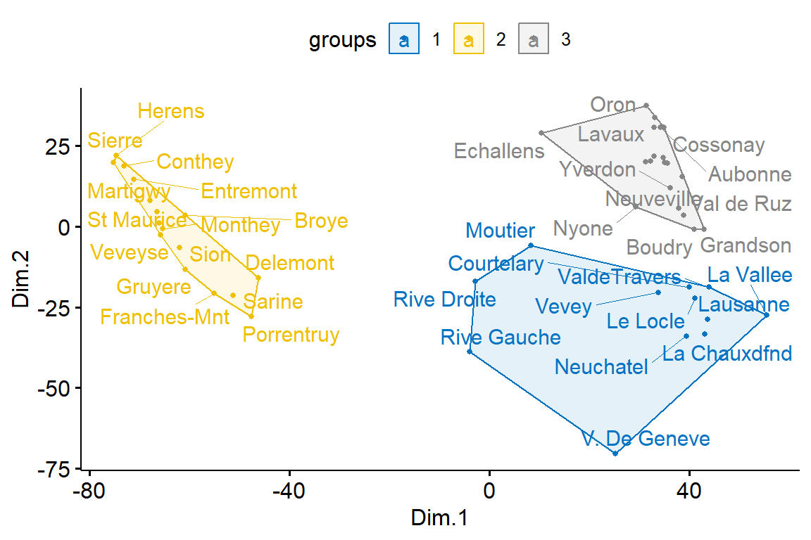
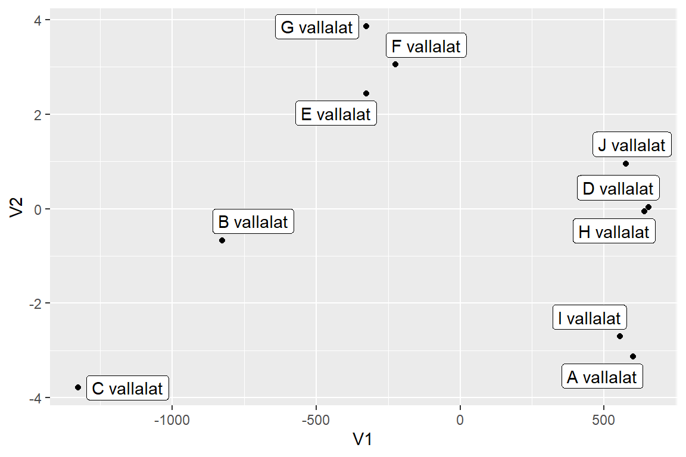

d <- rio::import(file = "adat/mds_swiss.xlsx")
str(d)
#> 'data.frame': 47 obs. of 7 variables:
#> $ Fertility : num 80.2 83.1 92.5 85.8 76.9 76.1 83.8 ...
#> $ Agriculture : num 17 45.1 39.7 36.5 43.5 35.3 70.2 67...
#> $ Examination : num 15 6 5 12 17 9 16 14 12 16 ...
#> $ Education : num 12 9 5 7 15 7 7 8 7 13 ...
#> $ Catholic : num 9.96 84.84 93.4 33.77 5.16 ...
#> $ Infant.Mortality: num 22.2 22.2 20.2 20.3 20.6 26.6 23.6 ...
#> $ province : chr "Courtelary" "Delemont" "Franches-M...
psych::headTail(d)
#> Fertility Agriculture Examination Education Catholic
#> 1 80.2 17 15 12 9.96
#> 2 83.1 45.1 6 9 84.84
#> 3 92.5 39.7 5 5 93.4
#> 4 85.8 36.5 12 7 33.77
#> ... ... ... ... ... ...
#> 44 67.6 18.7 25 7 8.65
#> 45 35 1.2 37 53 42.34
#> 46 44.7 46.6 16 29 50.43
#> 47 42.8 27.7 22 29 58.33
#> Infant.Mortality province
#> 1 22.2 Courtelary
#> 2 22.2 Delemont
#> 3 20.2 Franches-Mnt
#> 4 20.3 Moutier
#> ... ... <NA>
#> 44 19.5 ValdeTravers
#> 45 18 V. De Geneve
#> 46 18.2 Rive Droite
#> 47 19.3 Rive Gauche11 Többdimenziós skálázás
A többdimenziós skálázás (MDS) egy olyan többváltozós adatelemzési módszer, amelyet a minták közötti hasonlóság/különbség megjelenítésére használnak.
Az MDS a kiinduló \(p\) változó közötti hasonlóságot alacsonyabb, \(k\) dimenziós térben ábrázolja. Legtöbbször a \(k = 2\) az optimális választás, mert ekkor az objektumok helyét egy kétdimenziós pontdiagramon láthatjuk.
Az MDS-algoritmus bemenetként az objektumpárok közötti távolságokat reprezentáló hasonlósági mátrixot vár. Ezt R-ben a dist() függvénnyel állíthatjuk elő.
11.1 Az MDS algoritmusok típusai
Különféle MDS-algoritmusok léteznek:
Klasszikus többdimenziós skálázás. Ez a módszer a lehető legjobban őrzi az eredeti távolságmértéket a pontok között. Az MDS térképen lévő illesztett távolságok és az eredeti távolságok ugyanabban a mértékegységben vannak kifejezve. A klasszikus MDS az úgynevezett metrikus többdimenziós skálázás kategóriába tartozik. Szokták főtengely-elemzésnek is nevezni, és jellemzően kvantitatív adatokra alkalmazzuk.
Nem metrikus többdimenziós skálázás. Ordinális MDS néven is ismert. Itt nem a távolságérték mérőszáma a fontos vagy értelmes, hanem az, hogy a többi objektumpár közötti távolságokhoz képes ez kisebb vagy nagyobb. Az ordinális MDS olyan illesztett távolságokat konstruál, amelyek az eredeti távolságokkal azonos rangsorrendben helyednek el. Például, ha az 1. és 5. objektumok távolsága az ötödik helyen áll az eredeti távolságadatokban, akkor az MDS-konfigurációban is az ötödik helyen kell szerepelniük. Ezt az algoritmust általában kategorikus adatokra alkalmazzuk.
11.2 1. Példa
A swiss adatbázis 47 francia nyelvű tartományának termékenységi és társadalmi-gazdasági adatait tartalmazza. Az adatbázis a {datasets} csomagból származik, további információ: ?swiss. A példa ötlete innen származik.
Az R-ben több függvény is rendelkezésre áll:
cmdscale()- Klasszikus (metrikus) többdimenziós skálázás kiszámítása.MASS::isoMDS()- A Kruskal nem metrikus többdimenziós skálázásának kiszámítása (a nem metrikus MDS egyik formája).MASS::sammon()- Sammon nemlineáris leképezésének kiszámítása (a nem metrikus MDS egyik formája).
A fenti függvények egy távolságobjektumot várnak argumentumként, és k= a kívánt dimenziószámot jelenti. Alapértelmezés szerint kétdimenziós megoldással térnek vissza, de ezt meg tudjuk változtatni.
dist_1 <- dist(x = d, method = "euclidean")
mds_1 <- cmdscale(dist_1, k = 2)
mds_1 <- as.data.frame(mds_1)
names(mds_1) <- c("Dim.1", "Dim.2")
# Plot MDS
ggpubr::ggscatter(mds_1, x = "Dim.1", y = "Dim.2", label = d$province,
size = 1, repel = TRUE)Hozzunk létre 3 csoportot a k-közép eljárással.
library(magrittr)
# K-közep klaszter
mds_1$groups <- kmeans(mds_1, 3)$cluster %>%
as.factor()
# Plot and color by groups
ggpubr::ggscatter(mds_1, x = "Dim.1", y = "Dim.2", label = rownames(swiss),
color = "groups", palette = "jco", size = 1, ellipse = TRUE, ellipse.type = "convex",
repel = TRUE)
Jamovi-ban a fenti lépések végrehajtásáshoz a snowCluster csomagot kell telepíteni, majd a megjelenő snowCluster menüből a Multidimensional Scaling Plot almenüpontot kell kiválasztani.
11.3 Korrelációs mátrix megjelenítése többdimenziós skálázással
Az MDS a korrelációs mátrix vizsgálatára is alkalmas, rejtett mintázat felfedésére is használhatjuk.
A korreláció valójában a hasonlóságot méri, de könnyen átalakítható az eltérés (távolság) jellegű mértékké. Az objektumok közötti távolság: 1 - res.cor. A példában a faktor_real_human_targyak.xlsx adatbázist használjuk (Münnich és mtsai., 2006) [3.7.1 Probléma].
d <- rio::import(file = "adat/faktor_real_human_targyak.xlsx")
str(d)
#> 'data.frame': 30 obs. of 6 variables:
#> $ matek : num 5 4 3 2 5 1 5 2 5 5 ...
#> $ informatika: num 4 4 4 2 5 1 5 2 5 4 ...
#> $ kemia : num 5 5 3 3 5 1 5 3 5 5 ...
#> $ irodalom : num 5 4 2 5 3 5 3 5 4 2 ...
#> $ nyelvtan : num 4 4 2 5 3 5 3 5 5 2 ...
#> $ angol : num 5 5 3 5 3 5 3 5 5 2 ...
psych::headTail(d)
#> matek informatika kemia irodalom nyelvtan angol
#> 1 5 4 5 5 4 5
#> 2 4 4 5 4 4 5
#> 3 3 4 3 2 2 3
#> 4 2 2 3 5 5 5
#> ... ... ... ... ... ... ...
#> 27 5 5 5 2 2 3
#> 28 5 5 5 4 4 4
#> 29 2 2 3 4 5 5
#> 30 5 5 5 4 5 5res.cor <- cor(d, method = "spearman")
mds.cor <- (1 - res.cor) %>%
cmdscale() %>%
as.data.frame()
colnames(mds.cor) <- c("Dim.1", "Dim.2")
ggpubr::ggscatter(mds.cor, x = "Dim.1", y = "Dim.2", size = 1, label = colnames(res.cor),
repel = TRUE)A pozitívan korreláló objektumok közel vannak egymáshoz, ugyanazon oldalon (bal vagy jobb).
11.4 Az MDS és a PCA összehasonlítása
Az MDS és a dimenzió-redukciós módszerek (például a főkomponens elemzés és a faktoranalízis) között matematikailag és fogalmilag szoros összefüggés van .
A PCA inkább magukra a dimenziókra összpontosít, és a megmagyarázott variancia maximalizálására törekszik, míg az MDS inkább a skálázott objektumok közötti kapcsolatokra összpontosít.
Az MDS n-dimenziós adatpontokat vetít ki egy (általában) 2-dimenziós síkba úgy, hogy az n-dimenziós térben lévő hasonló objektumok közel lesznek egymáshoz a kétdimenziós diagramon is, míg a PCA többdimenziós teret vetít a maximális variancia irányába a korrelációs/kovariancia mátrix elemzésével.
11.5 2. Példa
A példa a magyar városokat elhelyezkedését vizsgálja a térképen (Münnich és mtsai., 2006) [6.1. R-forráskód]. Az adatok már eleve távolságmátrixban vannak reprezentálva (mds_varos_tavolsagmatrix.xlsx), ahol az egyes cellák a városok közti légvonalbeli távolságot listázzák. Mivel a többdimenziós skálázást eredetileg a térképészetben használták térképek rajzolására, ebben a példában Magyarország nagyobb városait jelenítjük meg egy kétdimenziós térképen.
d <- rio::import(file = "adat/mds_varos_tavolsagmatrix.xlsx")
str(d)
#> 'data.frame': 10 obs. of 11 variables:
#> $ VAROSNEV: chr "Budapest" "Gyor" "Tatab" "Szhely" ...
#> $ BUDAPEST: num 0 114 52 185 190 160 157 190 204 135
#> $ GYŐR : num NA 0 60 95 113 148 248 304 305 233
#> $ TATAB : num NA NA 0 144 144 140 193 243 251 182
#> $ SZHELY : num NA NA NA 0 45 126 289 381 392 330
#> $ ZALAE : num NA NA NA NA 0 90 262 375 391 330
#> $ KAPOSVAR: num NA NA NA NA NA 0 183 322 345 297
#> $ SZEGED : num NA NA NA NA NA NA 0 179 220 208
#> $ DEBRECEN: num NA NA NA NA NA NA NA 0 44 91
#> $ NYHAZA : num NA NA NA NA NA NA NA NA 0 72
#> $ MISKOLC : num NA NA NA NA NA NA NA NA NA 0
psych::headTail(d)
#> VAROSNEV BUDAPEST GYŐR TATAB SZHELY ZALAE KAPOSVAR SZEGED
#> 1 Budapest 0 <NA> <NA> <NA> <NA> <NA> <NA>
#> 2 Gyor 114 0 <NA> <NA> <NA> <NA> <NA>
#> 3 Tatab 52 60 0 <NA> <NA> <NA> <NA>
#> 4 Szhely 185 95 144 0 <NA> <NA> <NA>
#> ... <NA> ... ... ... ... ... ... ...
#> 7 Szeged 157 248 193 289 262 183 0
#> 8 Debrecen 190 304 243 381 375 322 179
#> 9 Nyhaza 204 305 251 392 391 345 220
#> 10 Miskolc 135 233 182 330 330 297 208
#> DEBRECEN NYHAZA MISKOLC
#> 1 <NA> <NA> <NA>
#> 2 <NA> <NA> <NA>
#> 3 <NA> <NA> <NA>
#> 4 <NA> <NA> <NA>
#> ... ... ... ...
#> 7 <NA> <NA> <NA>
#> 8 0 <NA> <NA>
#> 9 44 0 <NA>
#> 10 91 72 0dist <- as.dist(d[2:11])
dist
#> 1 2 3 4 5 6 7 8 9
#> 2 114
#> 3 52 60
#> 4 185 95 144
#> 5 190 113 144 45
#> 6 160 148 140 126 90
#> 7 157 248 193 289 262 183
#> 8 190 304 243 381 375 322 179
#> 9 204 305 251 392 391 345 220 44
#> 10 135 233 182 330 330 297 208 91 72Az elkészült távolságmátrix ismeretében már lefuttathatjuk a nem metrikus többdimenziós skálázást az R statisztikai program segítségével.
mds_1 <- MASS::isoMDS(dist, k = 2)
#> initial value 0.364001
#> iter 5 value 0.114745
#> iter 10 value 0.037146
#> final value 0.005866
#> converged
mds_1$points
#> [,1] [,2]
#> 1 9.578911 -19.29945
#> 2 -95.520939 -68.48619
#> 3 -39.393870 -37.74982
#> 4 -180.860153 -32.75667
#> 5 -178.931803 11.19081
#> 6 -121.302621 77.85193
#> 7 55.462602 130.86356
#> 8 196.837303 18.00145
#> 9 210.243678 -22.43017
#> 10 143.886892 -57.18545A fenti output mutatja a kapott kétdimenziós megoldást. Az egyes oszlopok az elemek első illetve második dimenzióbeli értékeit mutatja. Mivel a többdimenziós skálázásban fontos cél az adatok grafikus ábrázolása is, ezeket az értékeket kezelhetjük koordinátákként, melyek segítségével rajzolhatunk egy kétdimenziós térképet.
mds_data <- as.data.frame(mds_1$points)
psych::headTail(mds_data)
#> V1 V2
#> 1 9.58 -19.3
#> 2 -95.52 -68.49
#> 3 -39.39 -37.75
#> 4 -180.86 -32.76
#> ... ... ...
#> 7 55.46 130.86
#> 8 196.84 18
#> 9 210.24 -22.43
#> 10 143.89 -57.19library(ggplot2)
library(ggrepel)
ggplot(mds_data, aes(x = V1, y = V2)) + geom_point() + geom_label_repel(label = d$VAROSNEV)A fenti outputban a magát a térképet kaphatjuk meg. Az egyetlen furcsaság a kapott térképen az, hogy az észak-dél irány fordítva van. Ennek oka, hogy a módszer az egyes objektumok egymáshoz való viszonyát modellezi, ám a koordináta-tengelyek iránya és helye változhat. Természetesen megkaphatjuk a “valódi” Magyarország térképet is.
Ennek megoldásához csupán meg kell szoroznunk a második dimenziót (-1)-gyel.
mds_data$V2 <- -1 * mds_data$V2
ggplot(mds_data, aes(x = V1, y = V2)) + geom_point() + geom_label_repel(label = d$VAROSNEV)A kapott geometriai reprezentáció igen jól interpretálható. Ám emellett szükség van objektív mérőszámokra is, melyek információt adnak a kapott távolságok illeszkedésére vonatkozóan. A következőkben ilyen mérőszámokat mutatunk be.
- A Stress-érték. Az első illeszkedés jóságát mutató mérőszám a Stress-érték. Az információveszteség mértékét méri. Minél kisebb, annál jobb. Az értéke 0,05 alatt igazán jó.
mds_1$stress
#> [1] 0.005865683- Shepard-diagram. Grafikus információt adhat a kétdimenziós (vagy bármilyen más) megoldás jóságáról. Ehhez első lépésként elkészítjük a kétdimenziós megoldás távolságmátrixát (
deltaobjektum). Ezután ábrázolhatjuk az eredeti távolságok és a kétdimenziós távolságok kapcsolatát egy pontdiagram segítségével. Minél jobb a kétdimenziós megoldás, annál inkább egy egyenesre illeszkednek az adatok.
delta <- dist(mds_1$points)
plot(delta, dist)11.6 3. Példa
Ebben a példában különböző üdítőitalokat vizsgálunk meg a többdimenziós skálázás segítségével (Münnich és mtsai., 2006) [6.5.1 probléma]. Az adatbázis a különböző üdítőitalok távolságmátrixát tartalmazza (mds_uditok_tavolsagmatrix.xlsx). Az embereknek azt kellett megítélni, hogy az egyes üdítők mennyire különböznek egymástól. A 0 érték azt jelenti, hogy teljesen egyformák az italok, míg az 1 a lehető legnagyobb mértékű különbözőséget jelzi.
d <- rio::import(file = "adat/mds_uditok_tavolsagmatrix.xlsx")
str(d)
#> 'data.frame': 7 obs. of 8 variables:
#> $ NEVEK : chr "szorp" "hohesC" "savm_asv_viz" "szobi"...
#> $ szorp : num 0 0.48 0.66 0.19 0.72 0.94 0.89
#> $ hohesC : num 0.48 0 0.45 0.3 0.32 0.4 0.56
#> $ savm_asv_viz: num 0.66 0.45 0 0.44 0.38 0.56 0.38
#> $ szobi : num 0.19 0.3 0.44 0 0.48 0.68 0.67
#> $ traubi : num 0.72 0.32 0.38 0.48 0 0.2 0.3
#> $ fantanarancs: num 0.94 0.4 0.56 0.68 0.2 0 0.45
#> $ asv_viz : num 0.89 0.56 0.38 0.67 0.3 0.45 0
psych::headTail(d)
#> NEVEK szorp hohesC savm_asv_viz szobi traubi
#> 1 szorp 0 0.48 0.66 0.19 0.72
#> 2 hohesC 0.48 0 0.45 0.3 0.32
#> 3 savm_asv_viz 0.66 0.45 0 0.44 0.38
#> 4 szobi 0.19 0.3 0.44 0 0.48
#> ... <NA> ... ... ... ... ...
#> 41 szobi 0.19 0.3 0.44 0 0.48
#> 5 traubi 0.72 0.32 0.38 0.48 0
#> 6 fantanarancs 0.94 0.4 0.56 0.68 0.2
#> 7 asv_viz 0.89 0.56 0.38 0.67 0.3
#> fantanarancs asv_viz
#> 1 0.94 0.89
#> 2 0.4 0.56
#> 3 0.56 0.38
#> 4 0.68 0.67
#> ... ... ...
#> 41 0.68 0.67
#> 5 0.2 0.3
#> 6 0 0.45
#> 7 0.45 0dist <- as.dist(d[2:8])
dist
#> 1 2 3 4 5 6
#> 2 0.48
#> 3 0.66 0.45
#> 4 0.19 0.30 0.44
#> 5 0.72 0.32 0.38 0.48
#> 6 0.94 0.40 0.56 0.68 0.20
#> 7 0.89 0.56 0.38 0.67 0.30 0.45mds_1 <- MASS::isoMDS(dist, k = 2)
#> initial value 1.573115
#> iter 5 value 0.164954
#> iter 10 value 0.022263
#> final value 0.002023
#> converged
mds_1$points
#> [,1] [,2]
#> 1 -0.53868137 0.03041114
#> 2 -0.06571066 0.18616088
#> 3 0.02345226 -0.25210840
#> 4 -0.31947272 0.03166493
#> 5 0.17978098 0.01382719
#> 6 0.37258175 0.22327908
#> 7 0.34804977 -0.23323482A fenti output mutatja a kapott kétdimenziós megoldást. Az egyes oszlopok az elemek első illetve második dimenzióbeli értékeit mutatja. Mivel a többdimenziós skálázásban fontos cél az adatok grafikus ábrázolása is, ezeket az értékeket kezelhetjük koordinátákként, melyek segítségével rajzolhatunk egy kétdimenziós térképet.
mds_data <- as.data.frame(mds_1$points)
psych::headTail(mds_data)
#> V1 V2
#> 1 -0.54 0.03
#> 2 -0.07 0.19
#> 3 0.02 -0.25
#> 4 -0.32 0.03
#> ... ... ...
#> 41 -0.32 0.03
#> 5 0.18 0.01
#> 6 0.37 0.22
#> 7 0.35 -0.23library(ggplot2)
library(ggrepel)
ggplot(mds_data, aes(x = V1, y = V2)) + geom_point() + geom_label_repel(label = d$NEVEK)mds_1$stress
#> [1] 0.002022712A Magyarország városait bemutató példában egyértelmű volt az egyes koordinátatengelyek, dimenziók elnevezése. Ám egy ilyen példánál már nagyobb gondot okozhat. A fenti eredmények alapján láthatjuk, hogy az első dimenzióban az ásványvíz és a Fanta Narancs szerepel magas értékekkel, viszonylag kis értéke van a Szobi gyümölcslének és a szörpnek. A második dimenzióiban is magas értékkel szerepel a Fanta és a Hohes C, viszont extrém alacsonnyal az ásványvíz. Ezek alapján az első dimenzió képviselheti a szénsavtartalmat, míg a második a gyümölcstartalmat. A feladatban szereplő emberek fejében ez a két szempont tűnt fontosnak az üdítőitalok különbözőségének megítélése során.
11.7 4. Példa
Ebben a példában autómárkák közötti hasonlóságokat ítéltetünk meg a személyekkel (Münnich és mtsai., 2006) [6.5.2 probléma]. Az 1 érték jelenti a márkák teljes hasonlóságát, míg a 0 a hasonlóság hiányát.
d <- rio::import(file = "adat/mds_autok_tavolsagmatrix.xlsx")
str(d)
#> 'data.frame': 8 obs. of 9 variables:
#> $ AUTOK : chr "toyota celica" "audi a3" "seat ibiza" "sko...
#> $ TOYOTACE: num 1 0.4 0.25 0.12 0.67 0.39 0.26 0.19
#> $ AUDIA3 : num 0.4 1 0.31 0.39 0.5 0.24 0.18 0.52
#> $ SEATIBIZ: num 0.25 0.31 1 0.46 0.28 0.38 0.42 0.49
#> $ SKODAOCT: num 0.12 0.39 0.46 1 0.2 0.14 0.29 0.55
#> $ MAZDAMX6: num 0.67 0.5 0.28 0.2 1 0.38 0.26 0.26
#> $ NISSANM : num 0.39 0.24 0.38 0.14 0.38 1 0.4 0.22
#> $ SEATLEON: num 0.26 0.18 0.42 0.29 0.26 0.4 1 0.25
#> $ FORDMOND: num 0.19 0.52 0.49 0.55 0.26 0.22 0.25 1
d
#> AUTOK TOYOTACE AUDIA3 SEATIBIZ SKODAOCT MAZDAMX6 NI...
#> 1 toyota celica 1.00 0.40 0.25 0.12 0.67 ...
#> 2 audi a3 0.40 1.00 0.31 0.39 0.50 ...
#> 3 seat ibiza 0.25 0.31 1.00 0.46 0.28 ...
#> 4 skoda octavia 0.12 0.39 0.46 1.00 0.20 ...
#> 5 mazda mx6 0.67 0.50 0.28 0.20 1.00 ...
#> 6 nissan micra 0.39 0.24 0.38 0.14 0.38 ...
#> 7 seat leon 0.26 0.18 0.42 0.29 0.26 ...
#> 8 ford mondeo 0.19 0.52 0.49 0.55 0.26 ...
#> SEATLEON FORDMOND
#> 1 0.26 0.19
#> 2 0.18 0.52
#> 3 0.42 0.49
#> 4 0.29 0.55
#> 5 0.26 0.26
#> 6 0.40 0.22
#> 7 1.00 0.25
#> 8 0.25 1.00A fenti outputban egy hasonlósági mátrixot láthatunk. A többdimenziós skálázás előtt a hasonlósági mátrixot távolságmátrixszá kell transzformálni. Ezt egyszerűbben és pontosabban is megtehetjük:
Az egyszerűbb eset az, hogy minden hasonlósági értéket kivonunk 1-ből, így a kis értékek közeli hasonlóságot jelentenek (kis távolság), a nagy értékek távoli hasonlóságot jelentenek (bagy távolság).
d_1 <- 1 - d[2:9]
d_1
#> TOYOTACE AUDIA3 SEATIBIZ SKODAOCT MAZDAMX6 NISSANM SEATLEON
#> 1 0.00 0.60 0.75 0.88 0.33 0.61 0.74
#> 2 0.60 0.00 0.69 0.61 0.50 0.76 0.82
#> 3 0.75 0.69 0.00 0.54 0.72 0.62 0.58
#> 4 0.88 0.61 0.54 0.00 0.80 0.86 0.71
#> 5 0.33 0.50 0.72 0.80 0.00 0.62 0.74
#> 6 0.61 0.76 0.62 0.86 0.62 0.00 0.60
#> 7 0.74 0.82 0.58 0.71 0.74 0.60 0.00
#> 8 0.81 0.48 0.51 0.45 0.74 0.78 0.75
#> FORDMOND
#> 1 0.81
#> 2 0.48
#> 3 0.51
#> 4 0.45
#> 5 0.74
#> 6 0.78
#> 7 0.75
#> 8 0.00dist_1 <- as.dist(d_1)
dist_1
#> 1 2 3 4 5 6 7
#> 2 0.60
#> 3 0.75 0.69
#> 4 0.88 0.61 0.54
#> 5 0.33 0.50 0.72 0.80
#> 6 0.61 0.76 0.62 0.86 0.62
#> 7 0.74 0.82 0.58 0.71 0.74 0.60
#> 8 0.81 0.48 0.51 0.45 0.74 0.78 0.75mds_1 <- MASS::isoMDS(dist_1, k = 2)
#> initial value 5.826508
#> iter 5 value 2.950170
#> final value 2.891815
#> converged
mds_1$points
#> [,1] [,2]
#> 1 -0.361055519 -0.17243204
#> 2 0.006764815 -0.30716195
#> 3 0.216130743 0.18832931
#> 4 0.412741547 -0.08945592
#> 5 -0.324654056 -0.19618092
#> 6 -0.288487909 0.28343789
#> 7 -0.007968750 0.43461843
#> 8 0.346529128 -0.14115478
mds_1$stress
#> [1] 2.891815A távolságmátrix birtokában lefuttattuk a többdimenziós skálázást. Ez alkalommal háromdimenziós megoldást érdemes kérni, mivel a kétdimenziós megoldás Stress-értéke túl nagy.
mds_1 <- MASS::isoMDS(dist_1, k = 3)
#> initial value 2.196611
#> iter 5 value 0.256820
#> iter 10 value 0.151733
#> iter 15 value 0.107927
#> iter 20 value 0.019342
#> final value 0.000000
#> converged
mds_1$points
#> [,1] [,2] [,3]
#> 1 -0.46448409 -0.15747133 -0.07985979
#> 2 0.03707153 -0.40270153 -0.00671623
#> 3 0.24092363 0.24184414 0.09663242
#> 4 0.49812765 -0.05451923 -0.12227626
#> 5 -0.36659549 -0.21506553 -0.04539081
#> 6 -0.32944563 0.30522587 0.23017071
#> 7 -0.00870002 0.45983004 -0.21064227
#> 8 0.39310242 -0.17714243 0.13808223
mds_1$stress
#> [1] 4.343565e-14library(plotly)
# 3D ábrázolás
d_3d <- as.data.frame(mds_1$points)
d_3d$AUTOK <- d$AUTOK
plot_ly(d_3d, x = ~V1, y = ~V2, z = ~V3) %>%
add_text(text = ~AUTOK) %>%
add_markers(color = ~AUTOK)A hasonlósági mátrix távolságmátrixszá alakításának pontosabb módja a (Münnich és mtsai., 2006) 6.4 fejezetében olvasható.
d_2 <- sqrt(2 * (1 - d[2:9]))dist_2 <- as.dist(d_2)
dist_2
#> 1 2 3 4 5 6
#> 2 1.0954451
#> 3 1.2247449 1.1747340
#> 4 1.3266499 1.1045361 1.0392305
#> 5 0.8124038 1.0000000 1.2000000 1.2649111
#> 6 1.1045361 1.2328828 1.1135529 1.3114877 1.1135529
#> 7 1.2165525 1.2806248 1.0770330 1.1916375 1.2165525 1.0954451
#> 8 1.2727922 0.9797959 1.0099505 0.9486833 1.2165525 1.2489996
#> 7
#> 2
#> 3
#> 4
#> 5
#> 6
#> 7
#> 8 1.2247449mds_2 <- MASS::isoMDS(dist_2, k = 2)
#> initial value 6.389472
#> iter 5 value 5.192764
#> iter 10 value 3.416955
#> iter 15 value 2.949710
#> final value 2.891118
#> converged
mds_2$points
#> [,1] [,2]
#> 1 1.4484081 0.8945686
#> 2 -0.1610748 1.3129618
#> 3 -0.8393349 -0.9062232
#> 4 -1.7845996 0.2177189
#> 5 1.3049511 0.9653162
#> 6 1.3352331 -1.0778650
#> 7 0.2295031 -1.8533287
#> 8 -1.5330862 0.4468514
mds_2$stress
#> [1] 2.891118A távolságmátrix birtokában lefuttattuk a többdimenziós skálázást. Ez alkalommal háromdimenziós megoldást érdemes kérni, mivel a kétdimenziós megoldás Stress-értéke túl nagy.
mds_2 <- MASS::isoMDS(dist_2, k = 3)
#> initial value 5.751803
#> iter 5 value 2.166360
#> iter 10 value 1.472838
#> iter 15 value 0.710732
#> iter 20 value 0.271743
#> final value 0.008855
#> converged
mds_2$points
#> [,1] [,2] [,3]
#> 1 1.13442661 0.31620329 0.2158284
#> 2 -0.10372721 0.94488131 0.2158065
#> 3 -0.56639006 -0.51061522 -0.3193788
#> 4 -1.22334085 0.08201655 0.2935412
#> 5 0.86269111 0.49684620 0.2687634
#> 6 0.78134789 -0.62616329 -0.7513363
#> 7 0.06291958 -1.18359998 0.3083139
#> 8 -0.94792707 0.48043115 -0.2315383
mds_2$stress
#> [1] 0.008855227library(plotly)
# 3D ábrázolás
d_3d <- as.data.frame(mds_2$points)
d_3d$AUTOK <- d$AUTOK
plot_ly(d_3d, x = ~V1, y = ~V2, z = ~V3) %>%
add_text(text = ~AUTOK) %>%
add_markers(color = ~AUTOK)dist <- as.dist(d[2:9])
dist
#> 1 2 3 4 5 6 7
#> 2 0.40
#> 3 0.25 0.31
#> 4 0.12 0.39 0.46
#> 5 0.67 0.50 0.28 0.20
#> 6 0.39 0.24 0.38 0.14 0.38
#> 7 0.26 0.18 0.42 0.29 0.26 0.40
#> 8 0.19 0.52 0.49 0.55 0.26 0.22 0.25mds_1 <- MASS::isoMDS(dist, k = 2)
#> initial value 33.207938
#> iter 5 value 20.383903
#> iter 5 value 20.375967
#> iter 5 value 20.375494
#> final value 20.375494
#> converged
mds_1$points
#> [,1] [,2]
#> 1 0.21725475 -0.07057062
#> 2 0.23169840 0.16729709
#> 3 0.02516126 0.14398696
#> 4 -0.07964438 0.22492857
#> 5 -0.27770841 -0.02595944
#> 6 -0.07736511 -0.03519537
#> 7 0.04465412 -0.09341317
#> 8 -0.08405063 -0.31107402
mds_1$stress
#> [1] 20.37549A távolságmátrix birtokában lefuttattuk a többdimenziós skálázást. Ez alkalommal háromdimenziós megoldást érdemes kérni, mivel a kétdimenziós megoldás Stress-értéke túl nagy.
mds_1 <- MASS::isoMDS(dist, k = 3)
#> initial value 20.475699
#> iter 5 value 13.683747
#> iter 10 value 12.173787
#> iter 15 value 11.582671
#> iter 20 value 10.623521
#> iter 25 value 10.205554
#> final value 10.087435
#> converged
mds_1$points
#> [,1] [,2] [,3]
#> 1 0.13460836 0.12178456 -0.2459601
#> 2 0.26513691 0.11656555 0.1311542
#> 3 -0.11581558 0.20541786 0.2225079
#> 4 -0.07304790 0.17140624 -0.1649379
#> 5 -0.24115264 -0.20298696 0.1827992
#> 6 -0.19159160 0.01802297 -0.1309034
#> 7 0.18865375 -0.07207344 0.1366108
#> 8 0.03320869 -0.35813678 -0.1312707
mds_1$stress
#> [1] 10.08743mds_data <- as.data.frame(mds_1$points)
mds_data
#> V1 V2 V3
#> 1 0.13460836 0.12178456 -0.2459601
#> 2 0.26513691 0.11656555 0.1311542
#> 3 -0.11581558 0.20541786 0.2225079
#> 4 -0.07304790 0.17140624 -0.1649379
#> 5 -0.24115264 -0.20298696 0.1827992
#> 6 -0.19159160 0.01802297 -0.1309034
#> 7 0.18865375 -0.07207344 0.1366108
#> 8 0.03320869 -0.35813678 -0.1312707Az eredmények vizsgálata alapján elnevezhetjük az egyes dimenziókat. A kapott konfigurációban az első dimenziót, vagyis az x-tengelyt nevezhetjük az ár tengelyének. A második tengely, az y, a családbarát jellegre vonatozik, míg az utolsó, z dimenzió a sportosságot képviselheti.
Az MDS és főkomponens analízis összehasonlításáról itt olvashatunk: MDS using R
A hasonlósági-távolságmátrix átalakítás két módját egy ábrán is összehasonlíthatjuk.
r_ertekek <- seq(from = 0, to = 1, by = 0.01)
d_egyszeru <- 1 - r_ertekek
d_pontos <- sqrt(2 * (1 - r_ertekek))
d <- data.frame(x = c(r_ertekek, r_ertekek), y = c(d_egyszeru, d_pontos),
szamitas = rep(c("egyszerű", "pontos"), each = length(r_ertekek)))
str(d)
#> 'data.frame': 202 obs. of 3 variables:
#> $ x : num 0 0.01 0.02 0.03 0.04 0.05 0.06 0.07 0.08 0...
#> $ y : num 1 0.99 0.98 0.97 0.96 0.95 0.94 0.93 0.92 0...
#> $ szamitas: chr "egyszerű" "egyszerű" "egyszerű" "egyszerű"...
psych::headTail(d)
#> x y szamitas
#> 1 0 1 egyszerű
#> 2 0.01 0.99 egyszerű
#> 3 0.02 0.98 egyszerű
#> 4 0.03 0.97 egyszerű
#> ... ... ... <NA>
#> 199 0.97 0.24 pontos
#> 200 0.98 0.2 pontos
#> 201 0.99 0.14 pontos
#> 202 1 0 pontoslibrary(ggplot2)
ggplot(d, aes(x = x, y = y, color = szamitas, group = szamitas)) + geom_line(linewidth = 1) +
labs(x = "r (korreláció vagy hasonlóság)", y = "Távolság", color = "Számítás")11.8 5. Példa {unnumbered}
A vállalatokat számtalan jellemző mentén mérhetjük, most a vállalat nagyságát, a hatalmi távolságot és a vállalat szemléletében jelen levő konzervativizmus mértékét választottuk.
d <- rio::import(file = "adat/mds_vallalatok.xlsx")
str(d)
#> 'data.frame': 10 obs. of 4 variables:
#> $ NEV : chr "A vallalat" "B vallalat" "C vallalat" "D v...
#> $ MERET : num 75 1500 2000 21 1000 900 1000 35 120 100
#> $ HATALMIT: num 1 10 11 3 10 11 10 4 2 5
#> $ KONZERVA: num 2 9 8 4 9 8 11 3 2 4
d
#> NEV MERET HATALMIT KONZERVA
#> 1 A vallalat 75 1 2
#> 2 B vallalat 1500 10 9
#> 3 C vallalat 2000 11 8
#> 4 D vallalat 21 3 4
#> 5 E vallalat 1000 10 9
#> 6 F vallalat 900 11 8
#> 7 G vallalat 1000 10 11
#> 8 H vallalat 35 4 3
#> 9 I vallalat 120 2 2
#> 10 J vallalat 100 5 4Ebben a példában nem távolságmátrixból indulunk ki.Ez tehát olyan példája a többdimenziós skálázásnak, amikor nyers adatokból indulunk ki. Állítsuk elő a távolságmátrixot.
dist_1 <- dist(d[2:4])
dist_1
#> 1 2 3 4 5
#> 2 1425.04561
#> 3 1925.03532 500.00200
#> 4 54.07402 1479.02502 1979.02021
#> 5 925.07027 500.00000 1000.00100 979.03779
#> 6 825.08242 600.00167 1100.00000 879.04551 100.01000
#> 7 925.08756 500.00400 1000.00500 979.05005 2.00000
#> 8 40.12481 1465.02457 1965.01883 14.07125 965.03730
#> 9 45.01111 1380.04094 1880.03112 99.02525 880.06420
#> 10 25.39685 1400.01786 1900.01368 79.02531 900.02778
#> 6 7 8 9
#> 2
#> 3
#> 4
#> 5
#> 6
#> 7 100.04999
#> 8 865.04277 965.05181
#> 9 780.07500 880.08238 85.02941
#> 10 800.03250 900.04111 65.01538 20.32240mds_1 <- MASS::isoMDS(d = dist_1, k = 2)
#> initial value 0.000000
#> final value 0.000000
#> converged
mds_1$points
#> [,1] [,2]
#> 1 600.1319 -3.12622014
#> 2 -824.9116 -0.67138875
#> 3 -1324.9030 -3.78267877
#> 4 654.1132 0.03765570
#> 5 -324.9215 2.43526416
#> 6 -224.9247 3.05195762
#> 7 -324.9291 3.85407994
#> 8 640.1123 -0.05396771
#> 9 555.1277 -2.70104813
#> 10 575.1048 0.95634608
mds_1$stress
#> [1] 7.337118e-14A Stress-érték megfelelően kicsi, így elfogadhatjuk a kétdimenziós megoldást.
A fenti output segítségével pedig pontosan megtudhatjuk, hogy az egyes vállalatok milyen értékekkel szerepelnek az egyes dimenziókban.
mds_data <- as.data.frame(mds_1$points)
psych::headTail(mds_data)
#> V1 V2
#> 1 600.13 -3.13
#> 2 -824.91 -0.67
#> 3 -1324.9 -3.78
#> 4 654.11 0.04
#> ... ... ...
#> 7 -324.93 3.85
#> 8 640.11 -0.05
#> 9 555.13 -2.7
#> 10 575.1 0.96library(ggplot2)
library(ggrepel)
ggplot(mds_data, aes(x = V1, y = V2)) + geom_point() + geom_label_repel(label = d$NEV)
A kétdimenziós geometriai reprezentáció megmutatja, hogy az emberek véleménye szerint az egyes vállalatok hogyan helyezkednek el egymáshoz képest.